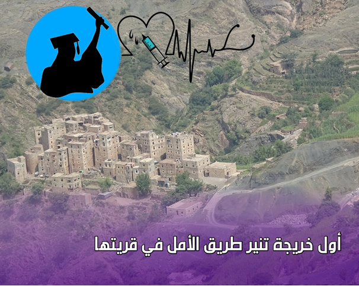

عائشة الكولي...من قلب الريف إلى بوابة المستقبل الطبي
في قلب جبال محافظة حجة، وتحديدًا في قرية بيت الكولي، بمديرية كحلان عفار، وُلد حلم كبير بين طرقات وعرة وأحلام مكبلة بقيود الواقع، من هناك بدأت عائشة حميد الكولي رحلتها التعليمية، متحديةً الأعراف والصعوبات، وراسمةً ملامح قصة نجاح نادرة في تعليم الفتيات الريفيات في اليمن.
في مدرسة الشهيد قائد الكولي الأساسية، بمديرية كحلان عفار، خطت عائشة أولى خطواتها في التعليم الابتدائي والإعدادي، رغم المسافة الطويلة والطريق الجبلي الوعر الذي كانت تقطعه يوميًا سيرًا على الأقدام للوصول إلى المدرسة، تغلبت على هذه الصعاب وأكملت تعليمها الثانوي في مدرسة "الزهراء للبنات" بمركز المديرية ذاتها.
تحكي عائشة لـ "أطياف" عن تلك السنوات الصعبة قائلةً "كنت أعيش بين تعب الطريق وإرهاق الدراسة، أحيانًا كنت أظن أن إكمال الإعدادية حلم بعيد المنال، لحظات الضعف هذه كانت ستدفعني نحو الاستسلام، لولا أنني كنت أذكر نفسي بأن العودة إلى الأعمال الشاقة في القرية لن تمنحني الحياة التي أحلم بها".
الفتيات في قريتها، كما تروي كنّ أكثر عرضة لترك الدراسة بسبب مشقة الطريق ونظرة المجتمع التقليدية التي كانت تعتبر تعليم البنات ترفًا لا جدوى منه، ومعظم زميلاتها انسحبن من مقاعد الدراسة، لكن عائشة بدعم والدتها، كان الأمل يشع مجددًا في قلبها مع كل عقبة تعترض طريقها.
وسط تحديات الدراسة، نما في قلب عائشة شغف آخر، فخلال سنوات الإعدادية، تعرضت لوعكة صحية شديدة، وأمام غياب الوعي الطبي في قريتها، تنقلت بين وصفات الأعشاب والكي بالنار قبل أن تنقلها أسرتها إلى صنعاء، حيث تم تشخيص حالتها وعلاجها بأدوية بسيطة، تقول عائشة: "لم أنسَ لحظة دخولي المستشفى ولا نظرات الأطباء الذين عرفوا علتي وأزالوا ألمي، عندها رسمت لنفسي حلمًا أن أرتدي ذات الرداء الأبيض يومًا ما".
كانت أختها الكبرى، التي حاولت الالتحاق بالجامعة ولم توفق، الملهمة الأولى لعائشة، كانت دائما تحثها على استكمال مسارها التعليمي، ورغم كل المثبطات المجتمعية، أصرت عائشة على أن تكمل الطريق الذي بدأته شقيقتها ولم تستطع إكماله.
لم تكن رحلة الانتقال إلى الجامعة سهلة، واجهت عائشة رفضًا واسعًا من محيطها الريفي، وُصفت محاولتها بأنها "بدعة"، وتعرضت لانتقادات كثيرة حتى من بعض الأقارب بحسن نية، إذ لم يكن من المعتاد أن تلتحق فتاة بالجامعة في أرياف مديرتيها كحلان عفار، تقول "كنت أخشى أن تثنيني عائلتي عن قراري بسبب كلام الناس، لكن دعم والدي لي منحني القوة لمواصلة الحلم رغم كل المعارضات".
في بداية مشوار تعليمها الجامعي تضاعف قلقها مع اقتراب اختبار القبول، حيث كانت تعلم أن هذه فرصتها الوحيدة، وأن الفشل يعني نهاية حلمها للأبد، ورغم ضيق الوقت والاستعدادات غير الكافية، خاضت التحدي متسلحة بالعزيمة والإيمان، ونجحت في ذلك.
بانتقالها إلى صنعاء، بدأت عائشة فصلاً جديدًا من النضال، الحياة الجامعية لم تكن سهلة لفتاة قادمة من بيئة ريفية بسيطة، تتذكر قائلة: "أول أيام الجامعة كانت مرعبة؛ معاملات معقدة، مبانٍ ضخمة، وجامعة مختلطة، شعرت بالضياع والخجل الشديد"، ومع مرور الأيام تدريجيًا، بدأت عائشة تتغلب على مخاوفها، تعرفت على صديقات جدد، وتلقت دعمًا من أساتذتها، مما ساعدها على الاندماج، وبعد نصف فصل دراسي، تحولت الخوف إلى حماس، والعزلة إلى تفاعل.
في كلية الطب بجامعة صنعاء، كان المنهج الدراسي الذي يفوق عشرين مادة في الفصل الواحد تحديا جديدا لعائشة، وإلى جانب ذلك كانت اللغة الإنجليزية تشكل تحديًا إضافيًا، إلا أن عزيمتها ظلت متقدة، كما أن تحديات أخرى مثل صعوبة المواصلات، وكلفة المراجع الدراسية، وبعد الأهل لم تزدها إلا إصرارًا على الوصول إلى خط النهاية.
وبعد سنوات من التعب والكفاح، وقفت عائشة أخيرًا على منصة التخرج بشهادة "مساعدة طبيب"، لتكون أول خريجة جامعية من قريتها، تصف لحظة تخرجها بدموع الفرح قائلة: "فرحة التخرج لا توصف! رفعت رأس أهلي، وكسرت جزءًا من القيود السلبية التي كبلت بنات قريتي طويلًا"، لكن طموح عائشة لم يتوقف عند الشهادة، تضيف "أحلم بوظيفة مرموقة، وأطمح أن أعود إلى قريتي، أعمل فيها وأرد لها الجميل، وأكون قدوة لكل فتاة تحلم بكسر قيود الجهل".
عائشة التي سارت في طريق محفوف بالمخاطر والعقبات، توجه اليوم رسالة مؤثرة لكل فتاة في الريف قائلة: "لا تتخلي عن حلمكِ، مهما كانت الصعوبات، الله لا يضيع تعب المجتهدين، اجعلي هدفكِ أمام عينيكِ، وتوكلي على الله، وستصلين بإذن الله".
وبهذا النجاح تبقى عائشة الكولي عنوانًا مضيئًا للفتيات، ورسالة أمل تتردد في جنبات قريتها، بأن بالإرادة والتصميم، تصنع المعجزات.